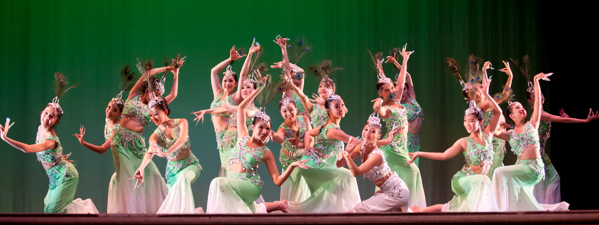

Angel Performing Arts has been providing Chinese dance curriculum for children, teens, and adults in the greater Boston Area since 2004. However, we are not limited to traditional Chinese dance; we offer classes in Ballet, Basic Technique, Jazz, and Modern, for dancers ages 3 and up. Our dedicated and professionally trained teachers deliver high quality and authentic education with proven teaching methods, performance experience, and unique programs designed to explore each student's interests, talents, and abilities.
We are located in the Greater Boston Area, with studios in Waltham, Newton, Acton, Lexington, Framingham, Canton, and North Andover.